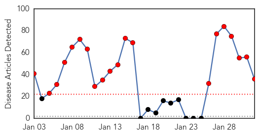
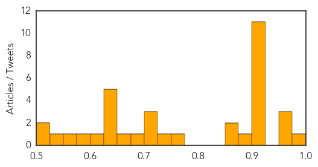

Hepatitis
30-Day Web Trend
13 alerts, 0 warnings
30-Day Twitter Trend
0 alerts, 0 warnings
Article Locations

Article Confidences

Top Articles:
-
No articles found for Feb 01, 2014
Top Tweets:
-
No tweets found for Feb 01, 2014
Unknown
30-Day Web Trend
20 alerts, 0 warnings

30-Day Twitter Trend
1 alerts, 0 warnings
Article Locations
Article Confidences
Top Articles:
- 0.977
- 6 more bird flu cases reported, 1 of them fatal
- 0.954
- 24,000 families face health risks after Bolivia floods
- 0.951
- CHINA China: bird flu also "kills" economy, crippling farmers
- 0.950
- 5th case of deadly pig virus confirmed on Ontario farm
- 0.917
- Six new human H7N9 cases in China
- 0.917
- Chicago Tribune
- 0.917
- Chicago Tribune
- 0.917
- Chicago Tribune
- 0.917
- Chicago Tribune
- 0.917
- Chicago Tribune
- 0.917
- Chicago Tribune
- 0.917
- Chicago Tribune
- 0.917
- Chicago Tribune
- 0.917
- Chicago Tribune
- 0.910
- The world windows to Thailand
- 0.892
- CDC: Norovirus caused cruise ship outbreak
- 0.866
- China says Japan's "hype" on air defence zone spreads tension
- 0.866
- Explosion kills two in Hezbollah stronghold near Syria
- 0.763
- TB, silent killer of sloth bears
- 0.742
- The Portland Press Herald / Maine Sunday Telegram
- 0.720
- Pigs in Ashanti not infected with African swine fever -
- 0.714
- Norovirus outbreak on Caribbean cruise ships
- 0.701
- 3.7 million suffer severe food insecurity in South Sudan
- 0.685
- Cruise line cites fog, not illness, for return
- 0.660
- Govt health schemes bleeding us, private hospitals say
- 0.645
- Feb. 2: Piglet-killing virus hitting farmers hard in Minnesota
- 0.643
- African Swine Fever Confirmed in Lithuania
- 0.642
- Cruise line: Fog, not virus, cut trip
- 0.629
- EU urges Russia to reconsider pig import ban
- 0.627
- CDC: Norovirus caused outbreak
- 0.605
- UN Mission applauds Indian doctors helping civilians in South Sudan
- 0.576
- Cruise line cites fog, not illness, for return
- 0.554
- Norovirus Outbreaks on Cruise Ships, What Gives?
- 0.537
- UPDATE 1-Ill cruise passengers 'felt like prisoners' ahead of Texas docking
- 0.521
- Doctors, patients flee hospital in South Sudan
- 0.503
- Cruise ship sails 2 days after early return
Top Tweets:
-
No tweets found for Feb 01, 2014